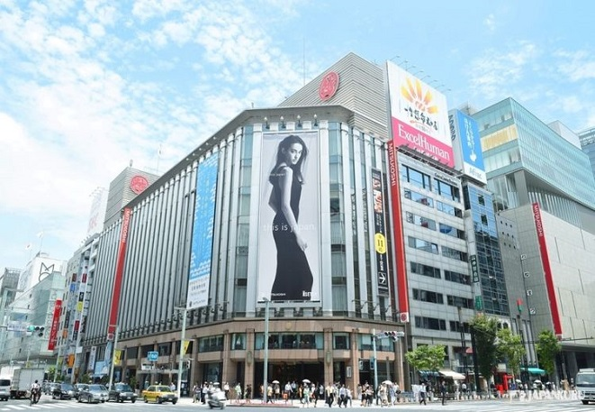
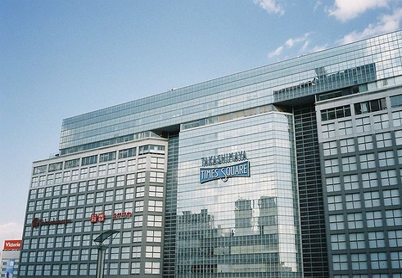
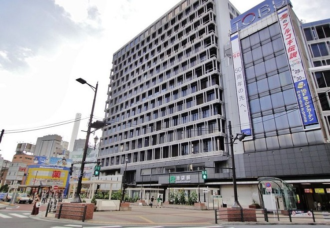
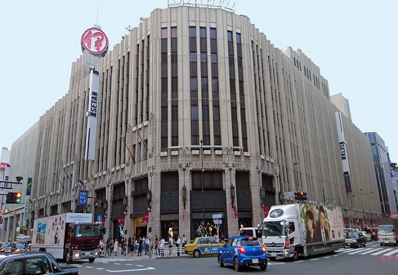

긴자 미츠코시
200여 개 이상의 패션 브랜드의 신발, 악세서리, 화장품 등이 있는 백화점이다. 주로 여성을 위한 쇼핑 상품들이 많지만 백화점 5층과 6층에는 헤어컷, 구두, 정장 등 남성을 위한 제품들도 다양하게 마련되어 있어 쇼핑하기에 좋다. 일본의 백화점인 만큼 살롱 드 기모노라는 기모노를 위해 마련된 매장도 있어 일본의 문화도 체험할 수 있다.
다카시마야
신주쿠 남쪽 지역에 위치한 다카시마야는 미츠코시와 마찬가지로 여성들을 위한 상품들로 가득해 고객을 모으고 있다. 또한 패션 이외에도 지하 식품관으로 유명하다. 다양한 디저트류 뿐 아니라 도시락을 비롯해 다양한 음식들이 있다. 자녀와 함께 간다면 아이들을 위한 장난감, 캐릭터 상품들이 많아 아이들과의 쇼핑 시간으 가질 수 있다.


이케부쿠로
이케로부투로역과 연결되는 도부백화점 이케부쿠로는 매장 뿐 아니라 레스토랑, 부대 시설이 다양하다. 도부백화점은 2020 도쿄 올림픽 공식 시념품샵을 비롯해 다양한 스포츠 관련 상품들이 많아 스포츠를 좋아하는 사람들에게 좋은 쇼핑 선택지가 될 것이다. 스포츠 상품 이외에도 의류, 주얼리, 가구 등 무수히 많은 종류의 상품도 다양하다.
신주쿠
신주쿠 백화점은 위의 백화점들과 달리 남성 고객들 또한 주요 타겟층으로 하는 백화점이다. 백화점 내 이세탄 맨, 지미추, 벨루티 등 남성들을 위한 명품 매장들과 네이버후드, 휴먼메이드 등 남성들을 위한 스트릿 브랜드들도 다양하다.
